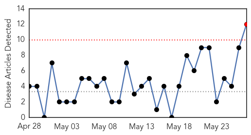
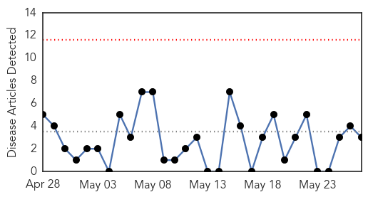
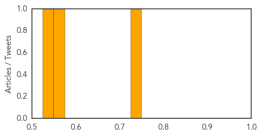

Dengue Fever
30-Day Web Trend
1 alerts, 0 warnings

30-Day Twitter Trend
0 alerts, 0 warnings

Article Locations

Article Confidences

Top Articles:
- 0.993
- Dengue claims year’s first life in city
- 0.991
- Spike in early cases point to another severe year for dengue fever in southern China
- 0.986
- Doctors advise people to adopt malaria preventive measures
- 0.953
- Brazil MOH: Dengue peak transmission season has passed, currently 846,000 cases
- 0.920
- N fowleri, dengue fever claim two lives
- 0.909
- Pakistan: Dengue claims year's first life in city
- 0.761
- Statement by WHO Director-General, Dr Margaret Chan, on the situation in Yemen - Yemen
- 0.758
- Some 8.6 million people in urgent need of medical help in Yemen: UN agency - Xinhua
- 0.741
- Roundup: Some 8.6 million people in urgent need of medical help in Yemen: UN agency
- 0.728
- Statement on the situation in Yemen
- 0.560
- Anti-dengue awareness drive on
- 0.537
- Visterra & A*STAR To Bring Dengue Antibody To Clinical Trials
Top Tweets:
-
No tweets found for May 27, 2015
Hepatitis
30-Day Web Trend
0 alerts, 0 warnings

30-Day Twitter Trend
0 alerts, 0 warnings

Article Locations

Article Confidences
Top Articles:
Top Tweets:
-
No tweets found for May 27, 2015